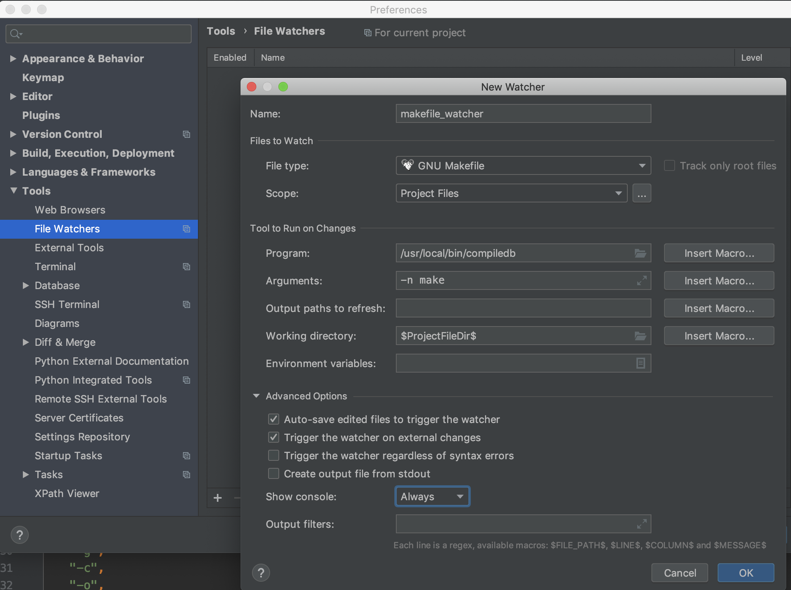
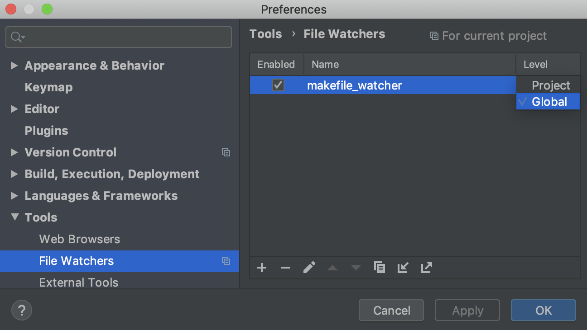

使 clion 支持 makefile 项目
目录
1 使用 compiledb 为 makefile 项目生成 Compilation Database
$ pip install compiledb $ cd ~/code/asyn_network $ compiledb -n make $ cat ./compile_commands.json
- compiledb 是为 makefile 项目生成 Compilation Database 的工具
- asyn_network 是项目目录
compiledb make是为项目 asyn_network 构建 Compilation Database 的命令。构建时会执行 make 命令，make 后面的参数都会传递给 makefilecompiledb -n make-n参数表示构建 Compilation Database 时不执行 make 命令- compile_commands.json 文件是构建后生成的 Compilation Database 文件
2 clion 中安装 Makefile support 插件
Preferences -> Plugins 中搜索 Makefile support 插件，安装
3 使用 compile_commands.json 文件重新打开该项目
选中 compile_commands.json，作为一个项目打开。打开后，项目中的代码跳转等功能就会恢复正常了。
当 makefile 发生变化时，需要重新创建 Compilation Database。
然后重新加载 Compilation Database，可以按 Tools -> Compilation Database -> Reload Compilation Database
当然，也可以创建一个 File Watchers：每当 makefile 发生变化时自动生成 Compilation Database
4 File Watchers
首先安装插件 File Watchers
然后为 makefile 文件创建文件监视器。如下图：

让该文件监视器在所有项目中可见，如下图：

!!! makefile 的每个更改都会触发该 File Watcher：会生成并加载整个 Compilation Database。